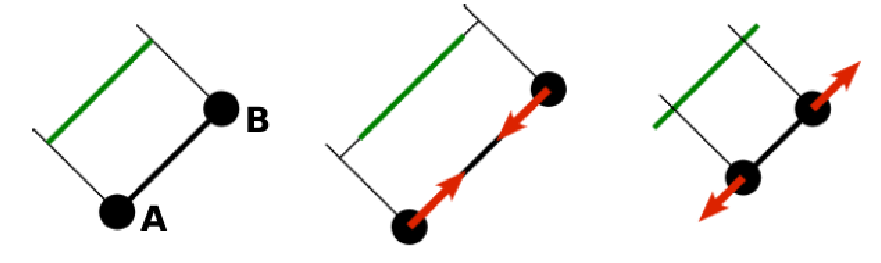
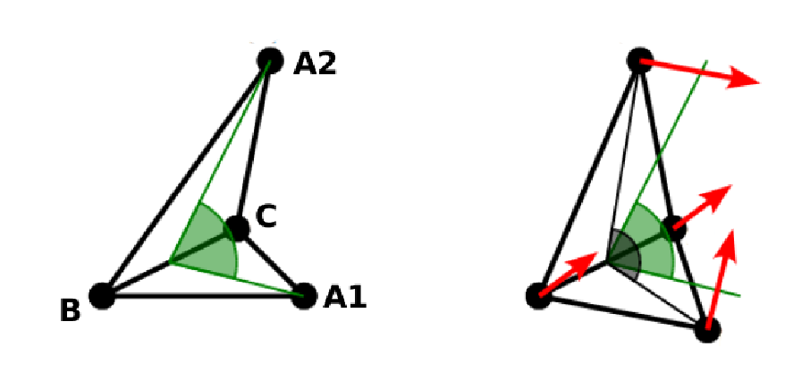
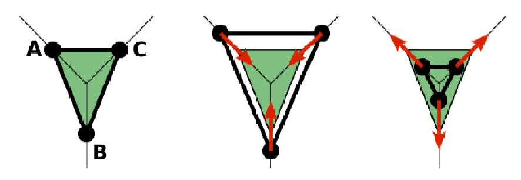

7. Bonded interactions¶
Bonded interactions are configured by the
espressomd.interactions.BondedInteractions class, which is
a member of espressomd.system.System. Generally, one may use
the following syntax to activate and assign a bonded interaction:
system.bonded_inter.add(bond)
system.part[pid1].add_bond((bond, pid2...))
In general, one instantiates an interaction object bond and subsequently passes it
to espressomd.interactions.BondedInteractions.add(). This will enable the
bonded interaction and allows the user to assign bonds between particle ids pidX.
Bonded interactions are identified by either their bondid or their appropriate object.
Defining a bond between two particles always involves three steps: defining the interaction, adding it to the system and applying it to the particles. To illustrate this, assume that three particles with ids 42, 43 and 12 already exist. One could for example create FENE bonds (more information about the FENE bond is provided in subsection FENE bond) between them using:
fene = FeneBond(k=1, d_r_max=1)
system.bonded_inter.add(fene)
system.part[42].add_bond((fene, 43), (fene, 12))
system.part[12].add_bond((fene, 43))
This will set up a FENE bond between particles 42 and 43, 42 and 12, and 12 and 43.
Note that the fene object specifies the type of bond and its parameters,
the specific bonds are stored within the particles. You can find more
information regarding particle properties in Setting up particles.
To delete the FENE bond between particles 12 and 43:
system.part[12].delete_bond((fene, 43))
7.1. Distance-dependent bonds¶
7.1.1. FENE bond¶
A FENE (finite extension nonlinear elastic) bond can be instantiated via
espressomd.interactions.FeneBond:
from espressomd.interactions import FeneBond
fene = FeneBond(k=<float>, d_r_max=<float>, r_0=<float>)
This command creates a bond type identifier with a FENE interaction. The FENE potential
models a rubber-band-like, symmetric interaction between two particles with magnitude \(K\), maximal stretching length \(\Delta r_0\) and equilibrium bond length \(r_0\). The bond potential diverges at a particle distance \(r=r_0-\Delta r_\mathrm{max}\) and \(r=r_0+\Delta r_\mathrm{max}\).
7.1.2. Harmonic bond¶
A harmonic bond can be instantiated via
espressomd.interactions.HarmonicBond:
from espressomd.interactions import HarmonicBond
hb = HarmonicBond(k=<float>, r_0=<float>, r_cut=<float>)
This creates a bond type identifier with a classical harmonic potential. It is a symmetric interaction between two particles. With the equilibrium length \(r_0\) and the magnitude \(k\). It is given by
The third, optional parameter defines a cutoff radius. Whenever a harmonic bond gets longer than \(r_\mathrm{cut}\), the bond will be reported as broken, and a background error will be raised.
7.1.3. Harmonic Dumbbell Bond¶
Note
Requires ROTATION feature.
A harmonic Dumbbell bond can be instantiated via
espressomd.interactions.HarmonicDumbbellBond:
from espressomd.interactions import HarmonicDumbbellBond
hdb = HarmonicDumbbellBond(k1=<float>, k2=<float>, r_0=<float>, r_cut=<float>)
This bond is similar to the normal harmonic bond in such a way that it sets up a harmonic potential, i.e. a spring, between the two particles. Additionally the orientation of the first particle in the bond will be aligned along the distance vector between both particles. This alignment can be controlled by the second harmonic constant \(k_2\). Keep in mind that orientation will oscillate around the distance vector and some kind of friction needs to be present for it to relax.
The roles of the parameters \(k_1, r_0, r_\mathrm{cut}\) are exactly the same as for the harmonic bond.
7.1.4. Quartic bond¶
A quartic bond can be instantiated via
espressomd.interactions.QuarticBond.
The potential is minimal at particle distance \(r=R\). It is given by
The fourth, optional, parameter defines a cutoff radius. Whenever a
quartic bond gets longer than r_cut, the bond will be reported as broken, and
a background error will be raised.
7.1.5. Bonded Coulomb¶
Note
Requires ELECTROSTATICS feature.
A pairwise Coulomb interaction can be instantiated via
espressomd.interactions.BondedCoulomb:
bonded_coulomb = espressomd.interactions.BondedCoulomb(prefactor=1.0)
system.bonded_inter.add(bonded_coulomb)
system.part[0].add_bond((bonded_coulomb, 1))
This creates a bond with a Coulomb pair potential between particles 0 and 1.
It is given by
where \(q_1\) and \(q_2\) are the charges of the bound particles and \(\alpha\) is the Coulomb prefactor. This interaction has no cutoff and acts independently of other Coulomb interactions.
7.1.6. Subtract P3M short-range bond¶
Note
Requires the P3M feature.
This bond can be instantiated via
espressomd.interactions.BondedCoulombSRBond:
from espressomd.interactions import BondedCoulombSRBond
subtr_p3m_sr = BondedCoulombSRBond(q1q2=<float>)
The parameter q1q2 sets the charge factor of the short-range P3M interaction.
It can differ from the actual particle charges. This specialized bond can be
used to cancel or add only the short-range electrostatic part
of the P3M solver. A use case is described in Particle polarizability with thermalized cold Drude oscillators.
7.1.7. Subtracted Lennard-Jones bond¶
espressomd.interactions.SubtLJ can be used to exclude certain particle
pairs from the non-bonded Lennard-Jones interaction:
subtLJ = espressomd.interactions.SubtLJ()
system.bonded_inter.add(subtLJ)
system.part[0].add_bond((subt, 1))
This bond subtracts the type-pair specific Lennard-Jones interaction between the involved particles. This interaction is useful when using other bond potentials which already include the short-ranged repulsion. This often the case for force fields or in general tabulated potentials.
7.1.8. Rigid bonds¶
Note
Requires BOND_CONSTRAINT feature.
A rigid bond can be instantiated via
espressomd.interactions.RigidBond:
from espressomd.interactions import RigidBond
rig = RigidBond(r=<float>, ptol=<float>, vtol=<float> )
To simulate rigid bonds, ESPResSo uses the Rattle Shake algorithm which satisfies
internal constraints for molecular models with internal constraints,
using Lagrange multipliers.[And83] The constrained bond distance
is named r, the positional tolerance is named ptol and the velocity tolerance
is named vtol.
7.1.9. Thermalized distance bond¶
A thermalized bond can be instantiated via
espressomd.interactions.ThermalizedBond:
from espressomd.interactions import ThermalizedBond
thermalized_bond = ThermalizedBond(temp_com=<float>, gamma_com=<float>,
temp_distance=<float>, gamma_distance=<float>,
r_cut=<float>, seed=<int>)
system.bonded_inter.add(thermalized_bond)
This bond can be used to apply Langevin thermalization on the centre of mass and the distance of a particle pair. Each thermostat can have its own temperature and friction coefficient.
The bond is closely related to simulating Particle polarizability with thermalized cold Drude oscillators.
7.1.10. Tabulated distance¶
A tabulated bond length can be instantiated via
espressomd.interactions.TabulatedDistance:
from espressomd.interactions import TabulatedDistance
tab_dist = TabulatedDistance(min=<min>, max=<max>,
energy=<energy>, force=<force>)
system.bonded_inter.add(tab_dist)
system.part[0].add_bond((tab_dist, 1))
This creates a bond type identifier with a tabulated potential. The force acts in the direction of the connecting vector between the particles. The bond breaks above the tabulated range, but for distances smaller than the tabulated range, a linear extrapolation based on the first two tabulated force values is used. For details of the interpolation, see Tabulated interaction.
7.1.11. Virtual bonds¶
A virtual bond can be instantiated via
espressomd.interactions.Virtual:
from espressomd.interactions import Virtual
tab = Virtual()
This creates a virtual bond type identifier for a pair bond without associated potential or force. It can be used to specify topologies and for some analysis that rely on bonds, or for bonds that should be displayed in the visualization.
7.2. Bond-angle interactions¶
Bond-angle interactions involve three particles forming the angle \(\phi\), as shown in the schematic below.
{kind=link}
This allows for a bond type having an angle-dependent potential. This potential is defined between three particles and depends on the angle \(\phi\) between the vectors from the central particle to the two other particles.
Similar to other bonded interactions, these are defined for every particle triplet and must be added to a particle (see espressomd.particle_data.ParticleHandle.bonds), in this case the central one.
For example, for the schematic with particles id=0, 1 (central particle) and 2 the bond was defined using
>>> system.part[1].add_bond((bond_angle, 0, 2))
The parameter bond_angle is an instance of one of four possible bond-angle
classes, described below.
7.2.1. Harmonic angle potential¶
espressomd.interactions.AngleHarmonic
Equation:
\(K\) is the bending constant and \(\phi_0\) is the equilibrium bond angle in radians ranging from 0 to \(\pi\).
Example:
>>> angle_harmonic = AngleHarmonic(bend=1.0, phi0=2 * np.pi / 3)
>>> system.bonded_inter.add(angle_harmonic)
>>> system.part[1].add_bond((angle_harmonic, 0, 2))
7.2.2. Cosine angle potential¶
espressomd.interactions.AngleCosine
Equation:
\(K\) is the bending constant and \(\phi_0\) is the equilibrium bond angle in radians ranging from 0 to \(\pi\).
Around \(\phi_0\), this potential is close to a harmonic one (both are \(1/2(\phi-\phi_0)^2\) in leading order), but it is periodic and smooth for all angles \(\phi\).
Example:
>>> angle_cosine = AngleCosine(bend=1.0, phi0=2 * np.pi / 3)
>>> system.bonded_inter.add(angle_cosine)
>>> system.part[1].add_bond((angle_cosine, 0, 2))
7.2.3. Harmonic cosine potential¶
espressomd.interactions.AngleCossquare
Equation:
\(K\) is the bending constant and \(\phi_0\) is the equilibrium bond angle in radians ranging from 0 to \(\pi\).
This form is used for example in the GROMOS96 force field. The potential is \(1/8(\phi-\phi_0)^4\) around \(\phi_0\), and therefore much flatter than the two aforementioned potentials.
Example:
>>> angle_cossquare = AngleCossquare(bend=1.0, phi0=2 * np.pi / 3)
>>> system.bonded_inter.add(angle_cossquare)
>>> system.part[1].add_bond((angle_cossquare, 0, 2))
7.2.4. Tabulated angle potential¶
A tabulated bond angle can be instantiated via
espressomd.interactions.TabulatedAngle:
from espressomd.interactions import TabulatedAngle
theta = np.linspace(0, np.pi, num=91, endpoint=True)
angle_tab = TabulatedAngle(energy=10 * (theta - 2 * np.pi / 3)**2,
force=10 * (theta - 2 * np.pi / 3) / 2)
system.bonded_inter.add(angle_tab)
system.part[1].add_bond((angle_tab, 0, 2))
The energy and force tables must be sampled from \(0\) to \(\pi\), where \(\pi\) corresponds to a flat angle. The forces are scaled with the inverse length of the connecting vectors. The force on the extremities acts perpendicular to the connecting vector between the corresponding particle and the center particle, in the plane defined by the three particles. The force on the center particle balances the other two forces. For details of the interpolation, see Tabulated interaction.
7.3. Dihedral interactions¶
7.3.1. Dihedral potential with phase shift¶
Dihedral interactions are available through the espressomd.interactions.Dihedral class:
from espressomd.interactions import Dihedral
dihedral = Dihedral(bend=<K>, mult=<n>, phase=<phi_0>)
system.bonded_inter.add(dihedral)
system.part[1].add_bond((dihedral, 0, 2, 3))
This creates a bond type identifier with a dihedral potential, a four-body-potential. In the following, let the particle for which the bond is created be particle \(p_2\), and the other bond partners \(p_1\), \(p_3\), \(p_4\), in this order. Then, the dihedral potential is given by
where \(n\) is the multiplicity of the potential (number of minima) and can take any integer value (typically from 1 to 6), \(\phi_0\) is a phase parameter and \(K\) is the bending constant of the potential. \(\phi\) is the dihedral angle between the particles defined by the particle quadruple \(p_1\), \(p_2\), \(p_3\) and \(p_4\), the angle between the planes defined by the particle triples \(p_1\), \(p_2\) and \(p_3\) and \(p_2\), \(p_3\) and \(p_4\):
Together with appropriate Lennard-Jones interactions, this potential can mimic a large number of atomic torsion potentials.
7.3.2. Tabulated dihedral potential¶
A tabulated dihedral interaction can be instantiated via
espressomd.interactions.TabulatedDihedral:
from espressomd.interactions import TabulatedDihedral
dihedral_tab = TabulatedDihedral(energy=<energy>, force=<force>)
system.bonded_inter.add(dihedral_tab)
system.part[1].add_bond((dihedral_tab, 0, 2, 3))
The energy and force tables must be sampled from \(0\) to \(2\pi\). For details of the interpolation, see Tabulated interaction.
7.4. Object-in-fluid interactions¶
Please cite [CimrakGJanvcigova14] when using the interactions in this section in order to simulate extended objects embedded in a LB fluid. For more details please consult the dedicated OIF documentation available at http://cell-in-fluid.fri.uniza.sk/en/content/oif-espresso.
The following interactions are implemented in order to mimic the mechanics of elastic or rigid objects immersed in the LB fluid flow. Their mathematical formulations were inspired by [DHCA07]. Details on how the bonds can be used for modeling objects are described in section Object-in-fluid.
7.4.1. OIF local forces¶
Note
Requires OIF_GLOBAL_FORCES feature.
OIF local forces are available through the espressomd.interactions.OifLocalForces class.
This type of interaction is available for closed 3D immersed objects flowing in the LB flow.
This interaction comprises three different concepts. The local elasticity of biological membranes can be captured by three different elastic moduli. Stretching of the membrane, bending of the membrane and local preservation of the surface area. Parameters \({L^0_{AB}},\ {k_s},\ {k_{slin}}\) define the stretching, parameters \(\phi,\ k_b\) define the bending, and \(A_1,\ A_2,\ k_{al}\) define the preservation of local area. They can be used all together, or, by setting any of \(k_s, k_{slin}, k_b, k_{al}\) to zero, the corresponding modulus can be turned off.
7.4.1.1. Stretching¶
For each edge of the mesh, \(L_{AB}\) is the current distance between point \(A\) and point \(B\). \(L^0_{AB}\) is the distance between these points in the relaxed state, that is if the current edge has the length exactly , then no forces are added. \(\Delta L_{AB}\) is the deviation from the relaxed state, that is \(\Delta L_{AB} = L_{AB} - L_{AB}^0\). The stretching force between \(A\) and \(B\) is calculated using
Here, \(n_{AB}\) is the unit vector pointing from \(A\) to \(B\), \(k_s\) is the constant for nonlinear stretching, \(k_{s,\mathrm{lin}}\) is the constant for linear stretching, \(\lambda_{AB} = L_{AB}/L_{AB}^0\), and \(\kappa\) is a nonlinear function that resembles neo-Hookean behavior
Typically, one wants either nonlinear or linear behavior and therefore one of \(k_s, k_{s,\mathrm{lin}}\) is zero. Nonetheless the interaction will work if both constants are non-zero.

7.4.1.2. Bending¶
The tendency of an elastic object to maintain the resting shape is achieved by prescribing the preferred angles between neighboring triangles of the mesh.
Denote the angle between two triangles in the resting shape by \(\theta^0\). For closed immersed objects, one always has to set the inner angle. The deviation of this angle \(\Delta \theta = \theta - \theta^0\) defines two bending forces for two triangles \(A_1BC\) and \(A_2BC\)
Here, \(n_{A_iBC}\) is the unit normal vector to the triangle \(A_iBC\). The force \(F_{bi}(A_iBC)\) is assigned to the vertex not belonging to the common edge. The opposite force divided by two is assigned to the two vertices lying on the common edge. This procedure is done twice, for \(i=1\) and for \(i=2\).

7.4.1.3. Local area conservation¶
This interaction conserves the area of the triangles in the triangulation. The area constraint assigns the following shrinking/expanding force to vertex \(A\)
where \(\Delta S_\triangle\) is the difference between current \(S_\triangle\) and area \(S^0\) of the triangle in relaxed state, \(T\) is the centroid of the triangle, and \(t_a, t_b, t_c\) are the lengths of segments \(AT, BT, CT\), respectively. Similarly the analogical forces are assigned to \(B\) and \(C\).
OIF local force is asymmetric. After creating the interaction
local_inter = OifLocalForces(r0=1.0, ks=0.5, kslin=0.0, phi0=1.7, kb=0.6, A01=0.2,
A02=0.3, kal=1.1, kvisc=0.7)
it is important how the bond is created. Particles need to be mentioned in the correct order. Command
p1.add_bond((local_inter, p0.part_id, p2.part_id, p3.part_id))
creates a bond related to the triangles 012 and 123. The particle 0 corresponds to point A1, particle 1 to C, particle 2 to B and particle 3 to A2. There are two rules that need to be fulfilled:
there has to be an edge between particles 1 and 2
orientation of the triangle 012, that is the normal vector defined as a vector product \(01 \times 02\), must point to the inside of the immersed object.
Then the stretching force is applied to particles 1 and 2, with the relaxed length being 1.0. The bending force is applied to preserve the angle between triangles 012 and 123 with relaxed angle 1.7 and finally, local area force is applied to both triangles 012 and 123 with relaxed area of triangle 012 being 0.2 and relaxed area of triangle 123 being 0.3.
Notice that also concave objects can be defined. If \(\theta_0\) is larger than \(\pi\), then the inner angle is concave.

7.4.2. OIF global forces¶
Note
Requires OIF_GLOBAL_FORCES feature.
OIF global forces are available through the
espressomd.interactions.OifGlobalForces class.
This type of interaction is available solely for closed 3D immersed objects.
It comprises two concepts: preservation of global surface and of volume of the object. The parameters \(S^0, k_{ag}\) define preservation of the surface while parameters \(V^0, k_{v}\) define volume preservation. They can be used together, or, by setting either \(k_{ag}\) or \(k_{v}\) to zero, the corresponding modulus can be turned off.
7.4.2.1. Global area conservation¶
The global area conservation force is defined as
where \(S^c\) denotes the current surface of the immersed object, \(S^c_0\) the surface in the relaxed state, \(S_{ABC}\) is the surface of the triangle, \(T\) is the centroid of the triangle, and \(t_a, t_b, t_c\) are the lengths of segments \(AT, BT, CT\), respectively.
7.4.2.2. Volume conservation¶
The deviation of the objects volume \(V\) is computed from the volume in the resting shape \(\Delta V = V - V^0\). For each triangle the following force is computed
where \(S_{ABC}\) is the area of triangle \(ABC\), \(n_{ABC}\) is the normal unit vector of the plane spanned by \(ABC\), and \(k_v\) is the volume constraint coefficient. The volume of one immersed object is computed from
where the sum is computed over all triangles of the mesh and \(h_{ABC}\) is the normal vector from the centroid of triangle \(ABC\) to any plane which does not cross the cell. The force \(F_v(ABC)\) is equally distributed to all three vertices \(A, B, C.\)
This interaction is symmetric. After the definition of the interaction by
global_force_interaction = OifGlobalForces(A0_g=65.3, ka_g=3.0, V0=57.0, kv=2.0)
the order of vertices is crucial. By the following command the bonds are defined
p0.add_bond((global_force_interaction, p1.part_id, p2.part_id))
Triangle 012 must have correct orientation, that is the normal vector defined by a vector product \(01\times02\). The orientation must point inside the immersed object.
7.4.3. Out direction¶
OIF out direction is available through the
espressomd.interactions.OifOutDirection class.
This type of interaction is primarily for closed 3D immersed objects to compute the input for membrane collision. After creating the interaction
out_direction_interaction = OifOutDirection()
it is important how the bond is created. Particles need to be mentioned in the correct order. Command
p0.add_bond((out_direction_interaction, p1.part_id, p2.part_id, p3.part_id))
calculates the outward normal vector of triangle defined by particles 1, 2, 3 (these should be selected in such a way that particle 0 lies approximately at its centroid). In order for the direction to be outward with respect to the underlying object, the triangle 123 needs to be properly oriented (as explained in paragraph Volume conservation).